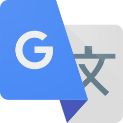

A empresa Google é responsável pelo maior site de pesquisas do mercado, seus serviços sendo amplamente
utilizados.
Dentre seus serviços, os mais utilizados são:
.svg.png) |
O Google Chrome é um navegador de
Internet. Sua
primeira versão foi lançada em 2008 após um editor de um blog especializado nos produtos da
empresa
divulgar
informações sobre um suposto livro em formato de história em quadrinhos ilustrando um
possível
navegador.
|
|
O Google Assistente oferece ajuda por viva-voz
no smartphone, tablet ou smartwatch quando
você diz "Ok Google".
|
 |
Google Drive é um serviço de armazenamento em
nuvem oferecido pelo Google, disponível
em planos
gratuitos e de assinatura. Ele permite que os usuários enviem e armazenem os arquivos na
plataforma,
podendo acessá-los de qualquer lugar e dispositivo.
|
 |
O Google Fotos é um serviço de
compartilhamento e armazenamento de imagens. O serviço
armazena suas
fotos e vídeos “na nuvem”.
|
|
O Google Maps mostra as rotas e utiliza
informações de trânsito em tempo real para
encontrar o melhor trajeto. Com
a navegação por voz, você ouve alertas de trânsito, instruções sobre onde virar, qual faixa
usar e o
melhor trajeto.
|
|
O Google Earth Engine é uma plataforma de análise
geoespacial baseada na nuvem, que permite
aos usuários visualizar e analisar imagens de satélite do nosso planeta.
|
|  |
O Google Tradutor é um aplicativo do Google
que permite traduzir textos, fotos e falas em
mais de 100 idiomas.
|
 |
O Google Acadêmico disponibiliza e cataloga para pesquisa os
artigos compartilhados em
aberto, bem como teses, livros e outros já armazenados no Google Livros.
|